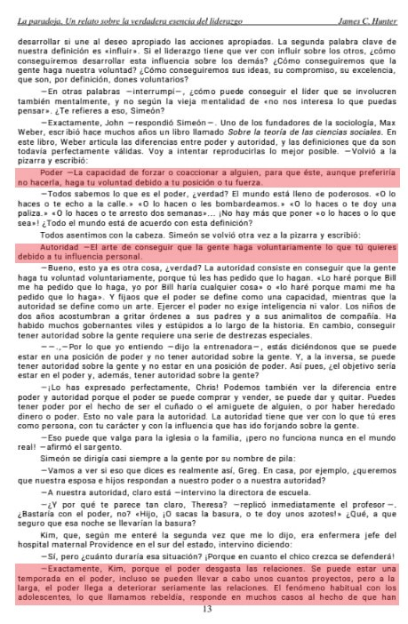
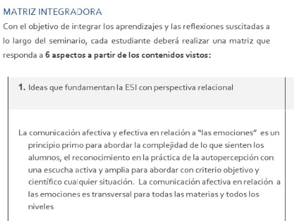
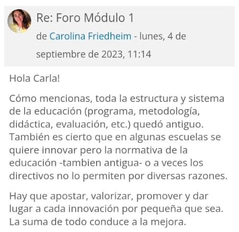

Cuarto de primavera 2023
Materias
Ética y deontología profesional
Evidencia de aprendizaje
Siguiendo la línea de la materia, respecto de pensar a la Ética y la acción menos
violenta en lo vincular y afectivo.
Desenmascarar patrones de poder/autoritarismo es un camino político a seguir.
Esta novela hace a la conclusión de un proceso de aprendizaje clave.
AUTOEVALUACIÓN
La continuidad fue sostenida con una muy buena dinámica de clases. Me logró poner en un lugar de crítico respecto de mis propios actos.
ESI con perspectiva relacional
Evidencia de aprendizaje
A partir de la democratización de un caso personal que fue tomado para la situación del
caso del desempeño 2, donde afirmó la necesidad de trabajar sobre los ejes de la
comunicación afectiva y efectiva y torno a las emociones.
Mi situación la vi reflejada en las clases y en las inquietudes de la mayoría respecto
de los prejuicios en torno a la aplicación de la ESI con sus desencadenantes posibles.
AUTOEVALUACIÓN
Poder ver en el resto de los colegas los puntos de encuentro con relación a los ejes sin
perderme en lo ideológico. Siempre objetivo y científico.
La dimensión filosófica y política se esgrime en otros terrenos.
Gestión de la innovación
Evidencia de aprendizaje
Pienso que las nuevas tecnologías al servicio de pensar nuevos paradigmas en los procesos de enseñanza y aprendizaje son una discusión entre la vieja y la nueva escuela. Entre lo pendular que implica una visión más progresista o más conservadora, al mismo tiempo que las diferentes realidades político/sociales determinan la calidad en la implementación efectiva de “lo nuevo”, lo innovador. La innovación y la creatividad, son el camino sin dudarlo.
AUTOEVALUACIÓN
Mi desempeño fue muy rico en calidad. Lo aportado por la cátedra me sirvió para mirar con otros ojos el futuro.
Taller de integración

Evidencia de aprendizaje
Tome nuevamente un posteo de la compañera, Verónica, ya que fue de alguna manera punta
de flecha en la integración misma de todo el proceso. Sus aportes fueron siempre muy
significativos y esto que expresa es un detalle del valor intelectual que tiene para mí
y lo que confío en su criterio.
Esta idea de la educación aumentada hace sistema con la misma materia que integra una
visión modernista donde las tecnologías no son el enemigo cuando, antes de comenzar la
carrera, las veía con sospechas…
AUTOEVALUACIÓN FINAL
Cómo siempre, este espacio termina de sintetizar los conceptos y pude lograr los objetivos propuestos. Estoy más que contento con el proceso y este espacio. Me gustaría poder imitar de mi colega/s la metodología para trabajar el orden y la armonía narrativa.